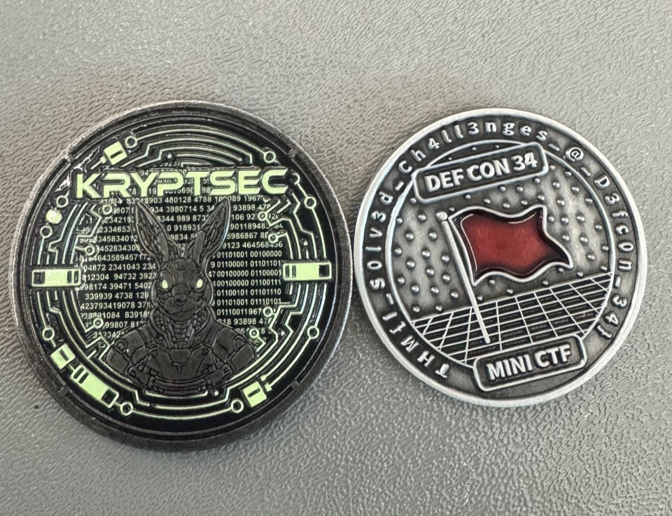

laet4x_
Cybersecurity Professional / Red Team Ops /
AI Agentic Developer
“Are you a one or a zero?”
Things I’m building
A few of the platforms I've shipped. More detail — and more projects — on the dedicated page.
OSIF
Open-source OSINT framework with a Metasploit-style interface across nine recon modules.
Vanguard VDP
Structured vulnerability disclosure program for laet4x.com with encrypted submissions.
Better Aklan
Open-source portal making the Province of Aklan's government transparent and accessible.
Whoami
laet4x is an information security leader with over a decade of experience spanning software development, systems architecture, and cybersecurity operations, based in California, USA. Currently working as a cybersecurity professional running red team operations, he's now also building AI agentic systems — and is the creator of OSIF, an open-source OSINT framework used by security researchers.
He co-founded Project Access Granted Society (Project-AG), PEHCON, and KALASAG, where he speaks, mentors, and runs free security seminars and CTF workshops for the Philippine cybersecurity community.
- Emaillaet4x@pehcon.org
- Bloglaet4x.medium.com
- CityCalifornia, USA
Security & Red Team
Build & Engineering
Leadership & Community
Credentials
Associate Chief Information Security Officer
Certified Ethical Hacker (Master)
Certified Threat Intelligence Analyst
Computer Hacking Forensic Investigator
EC-Council Certified Incident Handler
Certified In Cybersecurity
Certified Red Team Operations Management
Certified Threat Intelligence & Governance Analyst
Certified AppSec Practitioner
Certified Blockchain Developer
Certified Microsoft Innovative Educator
Competitions & Media
Competitions
- ROOTCON 14 Recovery Mode CTF 2nd Place
- ROOTCON 15 CTF 9th Place
- ROOTCON 15 Hacker Jeopardy 1st Place / Winner
- DEFCON34 — Kryptsec CTF 3rd Place
- DEFCON34 — TryHackMe CTF 7th Place
# plus countless other CTFs joined along the way
Media Interviews
- Bagong Bayani TV — Season 4, Episode 1 March 21, 2019
- Balitang Global February 13, 2019
Conferences Attended

- ROOTCON 12
- ROOTCON Recovery Mode
- ROOTCON 15
- ROOTCON 16
- RSA 2024
Currently into
Talks & Events
Conferences, meetups, and trainings — 2015 through 2026.
2026 1 talk
- DICT Aklan - Ethical Hacking Session
2023 2 talks
- ZyberPH — From Code to Security: Developing Secure Programming Practices
- Technological University of the Philippines — Cybersecurity in the 21st Century
2022 6 talks
- Harmony Philippines Ambassador DAO — February Meetup: Harmony and Its Ecosystem
- Harmony Philippines Ambassador DAO — March Meetup: NFT Gaming
- Harmony Philippines Ambassador DAO — April Meetup: Harmony DeFi Ecosystem and Wallet Security
- Meet-A-Verse 2.0 — Harmony Ecosystem and Wallet Security
- Armed Forces of the Philippines Cyber Summit 2022 — A Deep Look at Social Engineering
- AFP Signal Regiment CSIRT Training — Cyber Threat Intelligence and Disaster Recovery
2021 2 talks
- ENcrypt 2.0 Cyber Security Webinar — Cyber Attack and Defense
- PNP Region IV — Cyber Attack and Defense in the Modern Times
2020 1 talk
- Tuguegarao Cyber Summit — Cyber Attack and Defense in the 20th Century
2019 8 talks
- PITSF 2nd Meetup — Attacking Active Directory
- TCON 5 — Attacking Active Directory, Capture the Flag Workshop
- Tuguegarao Cyber Summit — Blockchain
- PNP DICTM 10th Founding Anniversary — Cyber Attack Vectors
- Programmer Developers Meetup 9 — Cyber Security Attack and Defense
- FEU Tech ACM — Blockchain 101
- PUP — Hybrid Mobile Application Development
- Capiz State University — Hybrid Mobile Application Development
2018 8 talks
- WordCamp Iloilo — Web Applications Security
- TCON 4 — Hacking with Chatbot
- DroidConPH — Reverse Engineering Android Applications
- WIRED — Web Applications Attacks and Defense
- CHED Region VI — Cyber Security
- Philippine Army 2018 Cyber Summit — Ransomware
- ICpEp.SE NCR Symposium 2018 — Web App Security
- Coding Girls Manila First Meetup — Social Engineering: Art of Human Hacking
2017 2 talks
- 8BYCIT — Web Application Security
- WVSU Janiuay Campus — Web Application Security
2016 6 talks
- Panay Island Cyber Security Summit — Free WIFI
- Regional Computer Engineering Convention 1.0 — Web App Security | OWASP Top 10 2013
- Philippine Army's 3ID — Cyber Security Seminar with PICSPro Panay
- TCON 3 — Wireless Hacking, Android Hacking
- PICSPro Panay Campus Tour at Western Institute of Technology — Web App Security | OWASP Top 10 2013
- Colegio De la Purisima Concepcion — Web Application Security
2015 2 talks
- Filamer Christian University — Web App Security | OWASP Top 10 2013
- The Gathering: Panay Island Cyber Security Summit — Web App Security | OWASP Top 10 2013